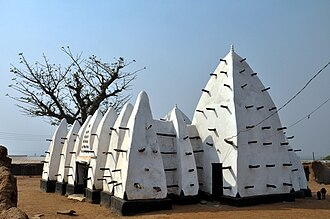

परिचय
La mosquée de Larabanga est une mosquée située à Larabanga, au Ghana.
مسجد لارابانكا هو أحد المساجد الأثرية في غانا، يقع في قرية لارابانكا في المنطقة الشماليَّة من غانا. شُيِّد المسجد وفق النمط المعماري السوداني - السواحيلي، وهو أقدم مساجد الدولة وأحد أقدم مساجد أفريقيا الغربية، وله أهمية ورمزية كبيرة عند المُسلمين في تلك الناحية من العالم، حيث لُقّبت المنطقة التي يقع فيها بلقب «مكَّة أفريقيا الغربيَّة». حسبَ الرواية الشعبية المُتناقلة فإنَّ هذا المسجد بُني سنة 1421م، وجُددت عمارته عدَّة مرَّات مُنذ ذلك الحين حتَّى اليوم، وساهم صُندوق المعالم العالمي بِترميمه بشكلٍ كبير، وصنَّفه ضمن أكثر مئة موقع عالمي مُهدد بالزوال. كما ساهمت أعمال ترميمه بإحياء أساليب صيانة الأبنية والعمائر بواسطة الطين والجص أو مزيجٍ بينهما.
The Larabanga Mosque is a mosque built in the Sudanese architectural style in the village of Larabanga, Savanna Region of Ghana. It is the oldest mosque in the country and one of the oldest in West Africa, and has been referred to as the "Mecca of West Africa". The mosque has undergone restoration several times since it was founded in 1421 CE; most recently in 2023. The World Monuments Fund (WMF) has contributed substantially to its restoration and lists it as one of the 100 Most Endangered Sites. The restoration works have revived the knowledge of adobe maintenance.
Masjid Larabanga adalah masjid yang terletak di desa Larabanga, Ghana. Masjid ini merupakan masjid tertua di Ghana, dan di sebagian wilayah Afrika Barat. Masjid Larabanga juga populer dengan sebutan 'Mekah Afrika Barat', karena nilai historis dan arsitekturnya yang kaya. Masjid ini telah mengalami restorasi beberapa kali sejak pertama kali didirikan. Masjid Larabanga dinyatakan sebagai situs Warisan Dunia pada tahun 2001, dan sekarang terdaftar dalam “100 Situs Paling Terancam Punah” dari World Monuments Fund (WMF).
لارا بانگا مسجد مغربی افریقی ملک گھانا کے شمالی علاقے میں واقع ایک تاریخی مسجد ہے۔ اسے گھانا کی قدیم ترین مسجد تسلیم کیا جاتا ہے اور یہ مغربی افریقہ کا مکہ کے نام سے بھی مشہور ہے۔ 1421 عیسوی میں اس کی بنیاد رکھے جانے کے بعد سے اس مسجد کی کئی بار بحالی ہوئی ہے ۔ عالمی ورثہ فنڈ نے اس کی بحالی میں کافی تعاون کیا۔ مسجد میں مٹی، گارے اور لکڑی کا استعمال کیا گیا ہے جو مخصوص سوڈانی طرز تعمیر ہے۔ اسے عالمی سطح پر ثقافتی ورثے کے تحفظ کے لیے کام کرنے والے اداروں نے ایک اہم تاریخی مقام قرار دیا ہے۔
Die Moschee von Larabanga im Dorf Larabanga in Ghanas Savannah Region ist die älteste bestehende Moschee des Landes und eines der ältesten islamischen Gotteshäuser in Westafrika. Der Bau befindet sich sechs Kilometer südlich des Eingangs zum Mole-Nationalpark und geht nach örtlicher Überlieferung auf das beginnende 15. Jahrhundert zurück.
La Mezquita Larabanga es una mezquita histórica del tipo arquitectónico “Sudanés”, se ubica en el pueblo de Larabanga, en Ghana. Aunque existe incertidumbre acerca de su antigüedad, se cree que es uno de los lugares más venerados del islamismo en Ghana.
La moschea di Larabanga è un'antica moschea, costruita in stile sudano-saheliano, nel villaggio di Larabanga, in Ghana. È la moschea più antica del paese, nonché una delle più antiche dell'Africa occidentale, tanto da essere rinominata "la Mecca dell'Africa occidentale". È stata restaurata numerose volte dalla sua fondazione nel 1421. Il World Monuments Fund ha contribuito con sostanziali donazioni al suo restauro e l'ha classificato tra i 100 siti più danneggiati.
拉拉班加清真寺 為建立在迦納拉拉班加的一座蘇丹風格清真寺。它是該國最古老的清真寺，亦為西非最古老清真寺之一，被譽為「西非麥加」。它建立於1421年，期間歷經多次修建，其中世界古蹟基金會為期間貢獻較大者，同時將其列入百大瀕危遺址之一。相關修建工程也重新喚起了人們對土坯維護的認識。
Larabanga-moskén är en en moské av sudanesisk typ i byn Larabanga i Ghana.
Moscheea din Larabanga este o moschee din satul Larabanga, Ghana. Aceasta este cea mai veche moschee din această țară și una dintre cele mai vechi din Africa de Vest. Este un loc foarte important de pelerinaj, fiind numită și Mecca Africii de Vest.
नक़्शे पर
दस्तावेज़ और लिंक
- Wikipédia — Français
- Wikipédia — العربية
- Wikipédia — English
- Wikipédia — Bahasa Indonesia
- Wikipédia — اردو
- Wikipédia — Deutsch
- Wikipédia — Español
- Wikipédia — Italiano
- Wikipédia — 中文
- Wikipédia — Svenska
- Wikipédia — Română
- Wikidata — Q490898
डेटा: विकिडेटा (CC0), हर 3 महीने में अपडेट। वर्ष इमारत के निर्माण की सबसे पुरानी ज्ञात तिथि है: जो इमारत बाद में मस्जिद बनी (जैसे हागिया सोफ़िया), उसके लिए यह मूल इमारत का वर्ष है। तस्वीरें: विकिमीडिया कॉमन्स, लेखक और लाइसेंस हर तस्वीर के पेज पर।